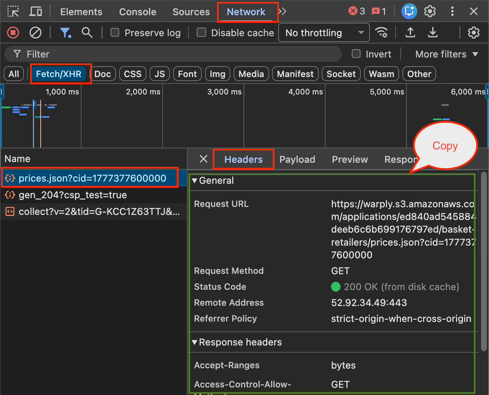
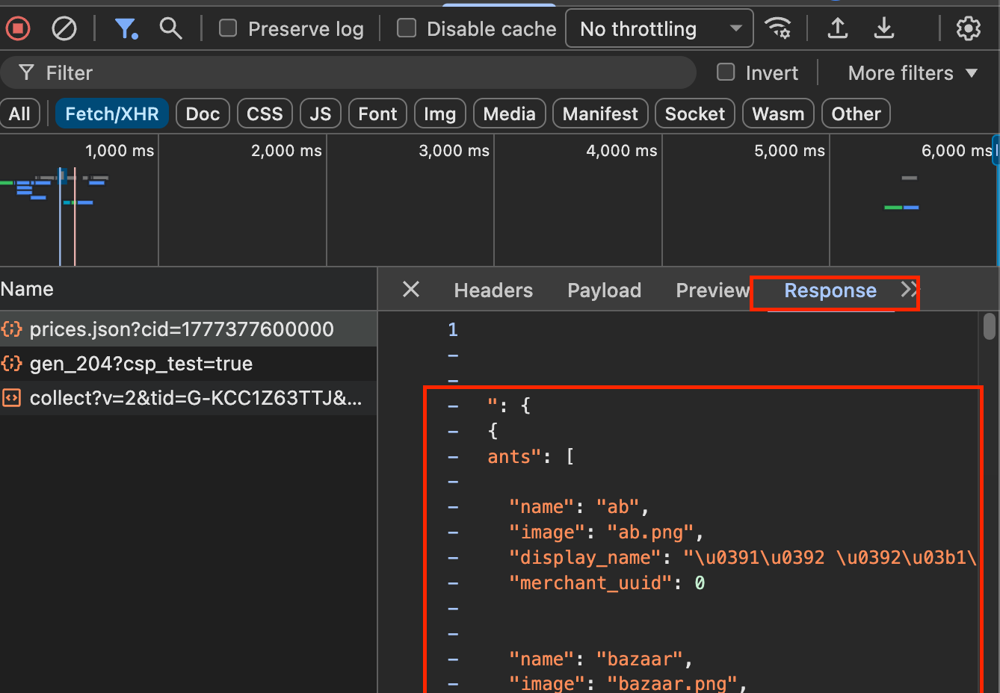

Python · Try it
Part One
Finding a Hidden JSON File
Some sites do not have a dynamic API at all. Instead, they periodically export all their data into a single JSON file and store it on a server or a cloud storage service like Amazon S3. Their front end then simply downloads that file and renders it. The file is not linked anywhere on the page — you would never find it by reading the HTML. But it appears in the Network tab the moment the page loads it.
e-katanalotis.gov.gr, the Greek government's consumer price observatory, works exactly this way. Every time you open the site, the browser silently fetches a 2.4 MB JSON file containing all monitored product prices. Here is how to find it.
Opening the Fetch/XHR filter
Every background data request the browser makes appears in the Network tab under the Fetch/XHR filter. This filter hides images, scripts, and stylesheets — only data requests remain.
- Open e-katanalotis.gov.gr in Chrome or Firefox.
- Press F12 (Windows / Linux) or Cmd ⌘ + Option ⌥ + I (Mac) to open DevTools.
- Click the Network tab.
- Click Fetch/XHR in the filter bar below the tab name.
- Reload the page with Cmd ⌘ + R (Mac) or Ctrl + R (Windows).

Nothing showing up? Make sure you clicked Fetch/XHR before reloading. If you reload first, then switch filters, the captured requests have already been filtered out and the list will appear empty.
Identifying the right request
After reloading, a list of requests appears. Most are for analytics or configuration. To find the data file, click each request and open its Response tab. If you see raw JSON text — especially a long one — you have found it.

On e-katanalotis.gov.gr the request you are looking for has this URL:
URL spotted in DevTools:
https://warply.s3.amazonaws.com/applications/ed840ad545884deeb6c6b699176797ed/basket-retailers/prices.json?cid=1777377600000
Two things stand out. First, the domain is warply.s3.amazonaws.com — an Amazon S3 bucket, not the government server. The site stores the file externally and just reads it from there. Second, the only query parameter is cid, a Unix timestamp in milliseconds. It is a cache buster: a different number forces the browser to download a fresh copy instead of using a cached one. In Python you generate it with int(time.time() * 1000).
The Python code
The request needs only three headers: Accept, Referer, and User-Agent. There is no authentication — the file is public.
Python · Copy to your notebook
Because this is a static file rather than a live database, there is no pagination. You download the whole dataset in one request and explore it all at once.
Part Two
Finding a Hidden API
The same DevTools technique works when the data source is not a static file but a live API. The difference is what you find: instead of a single URL that always returns the same file, you find an endpoint whose response changes based on the query parameters you send. The server queries a database, builds a fresh result, and returns it as JSON.
Diavgeia is a good example. Diavgeia actually publishes a documented public API — but if we did not know that, we would discover it the same way: open the site, run a search, watch the Fetch/XHR tab, and find the request that carries the results.
What DevTools reveals
After searching for a term on diavgeia.gov.gr, the Network tab shows a request to:
URL spotted in DevTools:
https://diavgeia.gov.gr/luminapi/api/search?page=0&q=q:%5B%22%CE%BA%CE%BB%CE%B9%CE%BC%CE%B1%CF%84%CE%B9%CF%83%CE%BC%CF%8C%CF%82%22%5D&sort=relative
The URL is URL-encoded, but Chrome and Firefox decode it for you in the Query String Parameters section of the Headers tab:
| Parameter (as shown in DevTools) | What it means |
|---|---|
page: 0 |
First page of results (zero-based) |
q: q:["κλιματισμός"] |
Full-text search for the word "κλιματισμός" |
sort: relative |
Sort by relevance rather than date |
This is the key difference from the static file. Change q and you get completely different results. Change page and you move through a paginated dataset. The server is running a live search each time.
About cookies in the cURL
When you copy a request as cURL from DevTools, the output includes any cookies the browser was holding at that moment. For Diavgeia, those are Google Analytics tracking cookies and a sidebar preference — none of them are needed to call the API. The endpoint is public. You can leave cookies out of your Python code entirely.
When cookies do matter: if the site requires you to be logged in, one of the cookies will be a session token, and the request will fail without it. You can usually tell because the DevTools response shows a 401 or 403 status, or an error message like "not authenticated".
The Python code
Python · Copy to your notebook
Part Three
Copy as cURL — The Universal Shortcut
Reading every header and parameter by hand is slow. DevTools has a one-click shortcut that captures the complete request — URL, parameters, headers, and cookies — as a single command you can paste anywhere.
- Right-click the request in the Network tab list.
- Choose Copy → Copy as cURL.
- Paste it into Claude with this prompt:
Prompt you can copy to Claude:
Here is a cURL command I captured from Chrome DevTools. Please convert it into Python using the
[paste your cURL command here]
Here is a cURL command I captured from Chrome DevTools. Please convert it into Python using the
requests library. Include timeout=30 and raise_for_status(). Remove any cookie headers — I want to test without them first. Print the status code and the first item in the response.[paste your cURL command here]
Claude will return ready-to-run Python with the URL, params dictionary, and headers already filled in. If the request fails without cookies, add them back and try again — that is usually a sign the endpoint requires a session.
Part Four
Your Turn — Parse the Response
The cell below contains a simulated Diavgeia search response. Run it and examine the structure, then try changing the search term in the q field or adding a page parameter.
What you learned in this chapter: that hidden data sources come in two forms — static JSON files (like e-katanalotis) and live API endpoints (like Diavgeia); that the Fetch/XHR filter in DevTools reveals both; that the main difference is whether the URL returns the same file every time or queries a live database based on your parameters; and that Copy as cURL is the fastest way to turn any discovered request into Python code.
Chapter Navigation
Move between chapters.